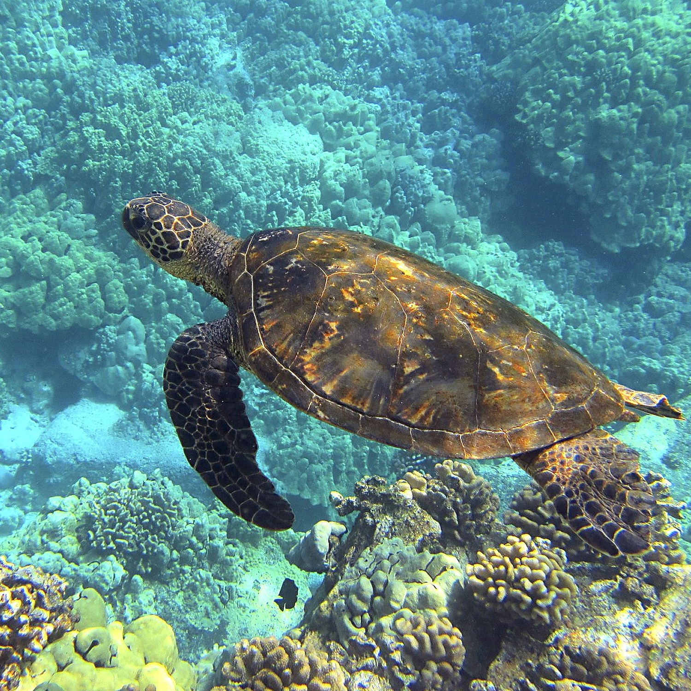

위급
위기
취약
해양 멸종 위기종
Endangered species
바다오염 그것은 지구상의 생명체가 직면한
가장 심각한 위협 중 하나입니다.
이로인한 기후변화는 아주 오래 전부터
지구에 맞춰 진화한 1200만 종 생물의
서식 환경을 적합하지 않은 상태로
바꾸어 놓고 있습니다.



푸른바다거북
거북목 바다거북과의 파충류
바다거북의 수영 실력은 ‘느림보’ 라는 고정관념을 허물게 한다. 이들은 장거리 수영에 잘 적응되어 있을 뿐 아니라 순간적으로 빠르게 헤엄칠 수 있다. 짧은 거리에서는 32km/h 이상으로 헤엄치는데, 평균 유영속도는 20km/h에 이른다. 우리 민족에게 신성시되는 바다거북이지만 멕시코 해안가 주민들은 귀한 손님이 찾아오거나 생일, 부활절과 같은 특별한 날에 바다거북 고기로 만든 카구아마(Caguama)라는 별식을 즐긴다. 이로 인해 이동하는 바다거북의 80퍼센트 이상이 중미지역에서 최후를 맞는 것으로 조사되었다.